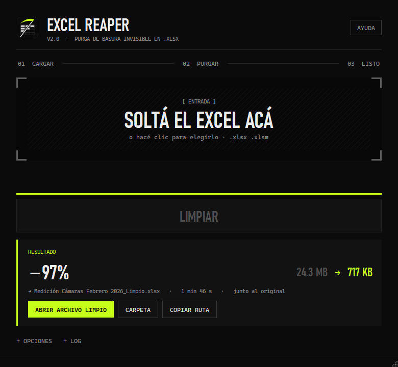
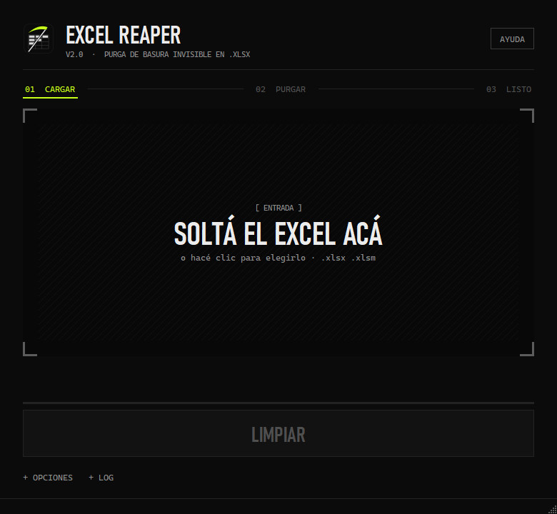
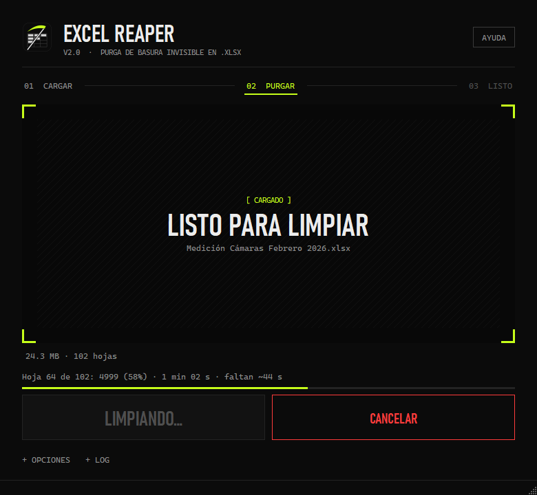

Excel Reaper
V2.0 · WINDOWS
Excel Reaper
V2.0 · WINDOWS
[ PURGA DE BASURA INVISIBLE EN .XLSX ]
Tu Excel pesado, liviano.
Para los archivos que pesan muchísimo o tardan una eternidad en abrir, aunque tengan pocos datos. Tu original no se toca.
Descargar gratis .exe · 48 MBWINDOWS 10/11 · SIN INSTALAR · FUNCIONA SIN INTERNET

[ CÓMO SE USA ]
Tres pasos. Cero configuración.
01
Cargar
Arrastrá el Excel a la ventana, o hacé clic para elegirlo. Podés soltar varios a la vez.
02
Purgar
Tocá LIMPIAR. La barra muestra el avance y cuánto falta, aunque el archivo sea enorme.
03
Listo
Ves el antes y el después, y abrís el archivo limpio con un clic. Queda al lado del original.
[ ASÍ SE VE ]
Sin vueltas.


[ QUÉ HACE ]
Saca la basura. Deja lo tuyo.
- Borra filas, columnas y dibujos fantasma que inflan el peso
- Reconstruye el libro y tira estilos acumulados
- Respeta datos, fórmulas, links y comentarios
- Mantiene combinadas, filtros, filas fijas y hojas ocultas
- Crea un archivo nuevo terminado en
_Limpio - Limpia varios archivos en tanda
- Se cancela al instante, sin dejar nada a medias
- Si algo falla, te dice qué pasó en criollo
[ PREGUNTAS ]
Por las dudas.
- ¿Modifica mi archivo?
- No. Crea uno nuevo al lado, con el mismo nombre terminado en
_Limpio. Si ya existía, crea_Limpio (2). - Windows dice «Windows protegió su PC». ¿Qué hago?
- Pasa con cualquier programa nuevo que no tiene firma digital paga. Tocá Más información y después Ejecutar de todas formas.
- ¿Sube mis datos a algún lado?
- No. Todo pasa en tu computadora; ni siquiera necesita internet.
- Tengo un .xls viejo.
- Abrilo en Excel y guardalo como «Libro de Excel (.xlsx)». Después pasalo por Excel Reaper.